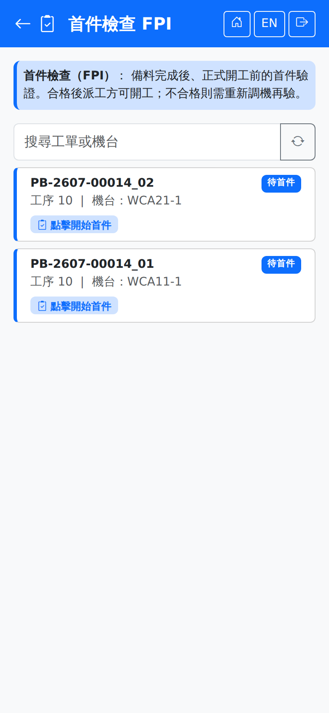

首件檢查 FPIFirst Article (FPI)
路徑：/mobile/mfg/fpi.html | 備料完成後、開工前的首件驗證Path: /mobile/mfg/fpi.html | First-piece verification after setup and before production
列出待首件的派工。首件檢查合格後派工才可開工；不合格則需重新調機再驗。只有工序設定了需要首件檢查的派工才會出現在這裡——清單空白通常代表目前沒有這類派工，不是畫面異常。Lists the dispatches awaiting first-piece inspection. A dispatch may only start once FPI passes; a failure means re-adjusting the machine and inspecting again. Only dispatches whose operation is set to require FPI appear here — an empty list usually means there are none right now, not that the screen is broken.

首件檢查畫面（兩張待首件派工，狀態徽章為「待首件」）First article screen (two dispatches awaiting FPI, badged "Pending FPI")
操作步驟Steps
1
用上方查詢列輸入工單或機台縮小範圍（選填）。Narrow the list by typing a work order or machine in the search bar (optional).
2
點該派工的「點擊開始首件」，進入 FPI 首件量測頁。Tap "Start FPI" on the dispatch to open the FPI measurement screen.
3
在量測頁選擇驗證等級（VL）、填入量測值與整批不良數，確認判定結果後送出。On the measurement screen choose the verification level (VL), enter the measured values and the defect count, check the verdict and submit.
量測頁的欄位與操作方式與製程檢驗（IPQC）相同，詳見該頁說明。The fields and the way the measurement screen works are the same as for in-process inspection (IPQC); see that page.
判定結果The verdict
首件採 MIL-STD-1916 Ac=0：任一不良即判不合格。First-piece inspection uses MIL-STD-1916 with Ac=0: any single defect fails it.
| 結果Result | 後續What happens next |
|---|---|
| 合格Pass | 派工放行為「備料完成」，可以開工。提示訊息為「首件合格，可開工」。The dispatch is released to "Ready" and work can start. The message reads that FPI passed and work may begin. |
| 不合格Fail | 派工轉為「暫停」（原因：首件不合格），提示訊息為「首件不合格，請重新調機」。重新調機後，由品管在桌機「派工作業 → 暫停處理」恢復，派工回到「待首件」再驗一次。The dispatch goes on hold (reason: first-piece inspection failed), and the message reads that FPI failed and the machine needs re-adjusting. After re-adjusting, QC resumes it on the desktop under Dispatch Operations → Handle hold, and the dispatch returns to "Pending FPI" to be inspected again. |
首件不合格與製程檢驗（IPQC）不合格都會讓派工轉為「暫停」，差別在恢復後的去處：首件不合格回到「待首件」重新量測，IPQC 不合格回到「生產中」。品質原因的暫停須由具檢驗單更新權限的人員恢復。Both a failed first-piece inspection and a failed in-process inspection (IPQC) put the dispatch on hold. The difference is where it goes when resumed: after a failed first piece it returns to "Pending FPI" to be measured again; after a failed IPQC it returns to "In Progress". A hold for a quality reason can only be resumed by someone with update permission on inspection orders.
SmartFactory MES 系統使用手冊 | 如需協助請聯繫系統管理者SmartFactory MES User Manual | Contact your system administrator if you need help